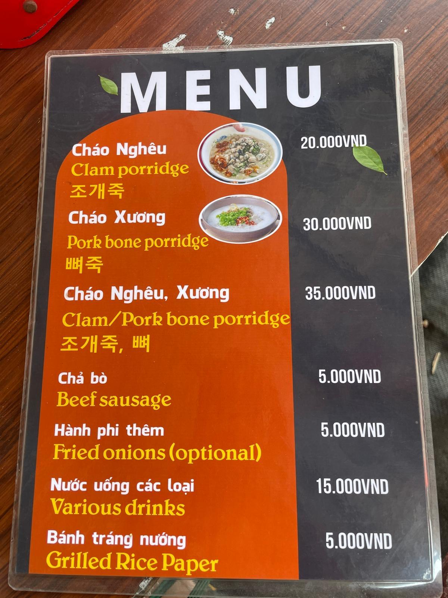
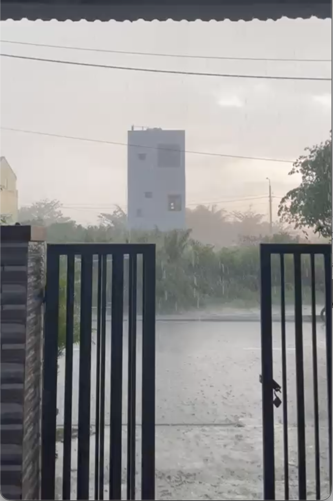
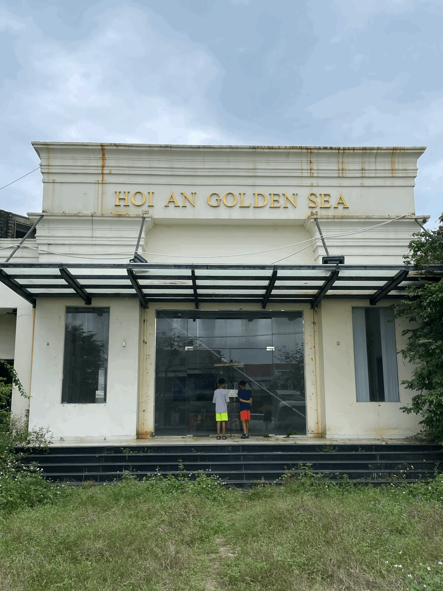
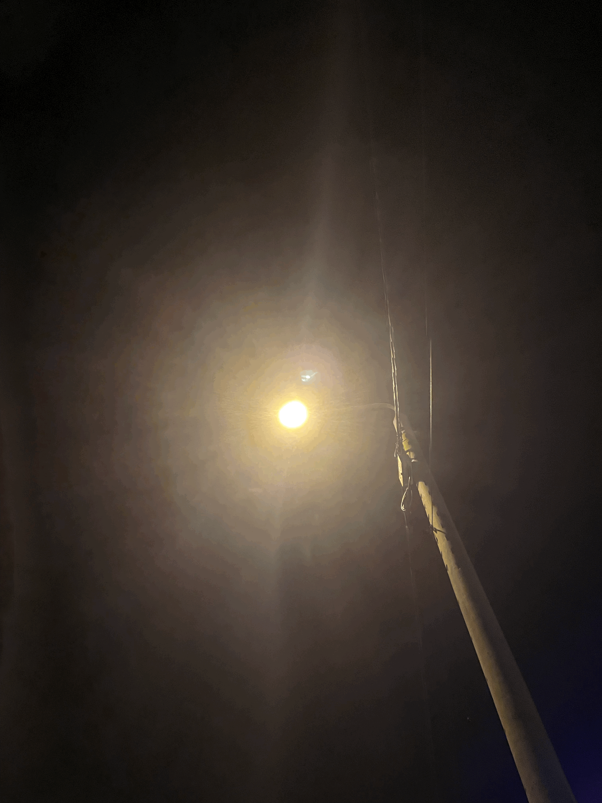
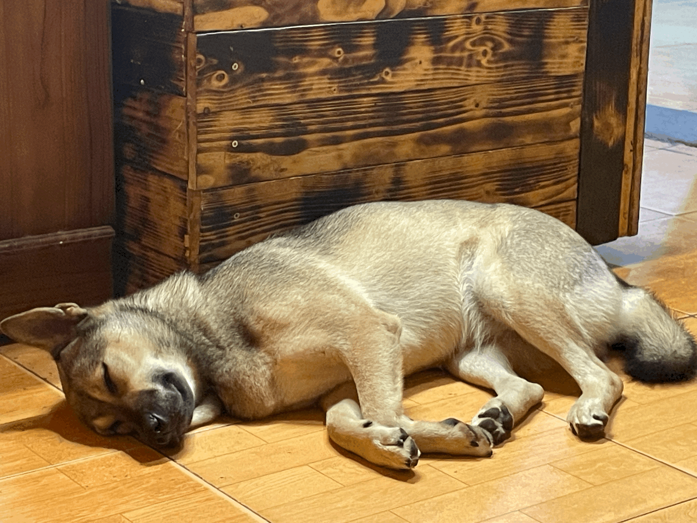
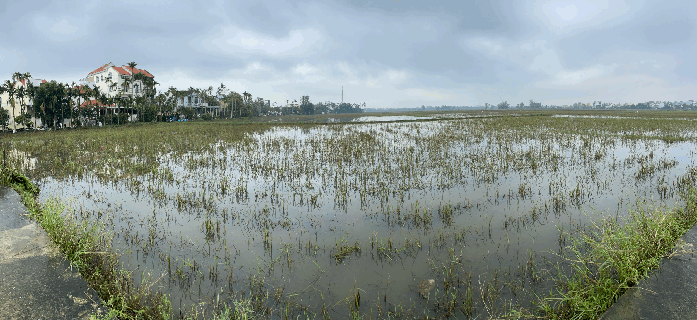
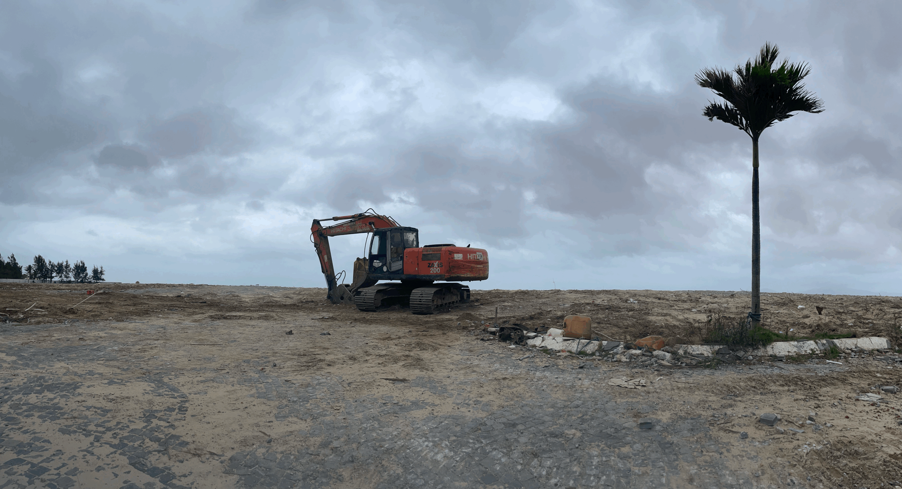
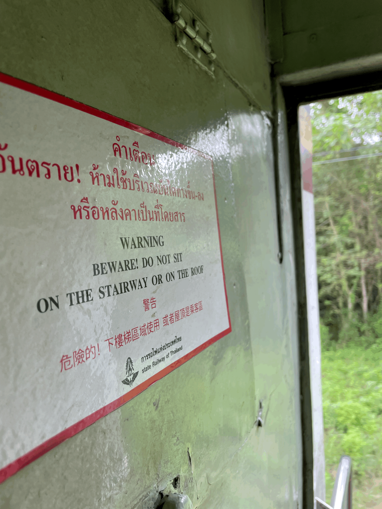
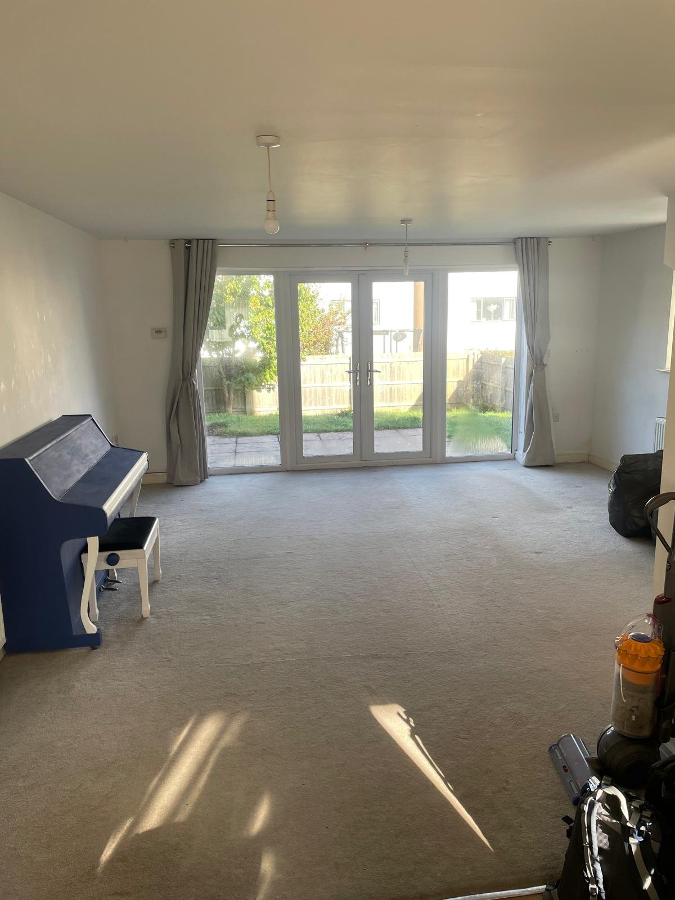
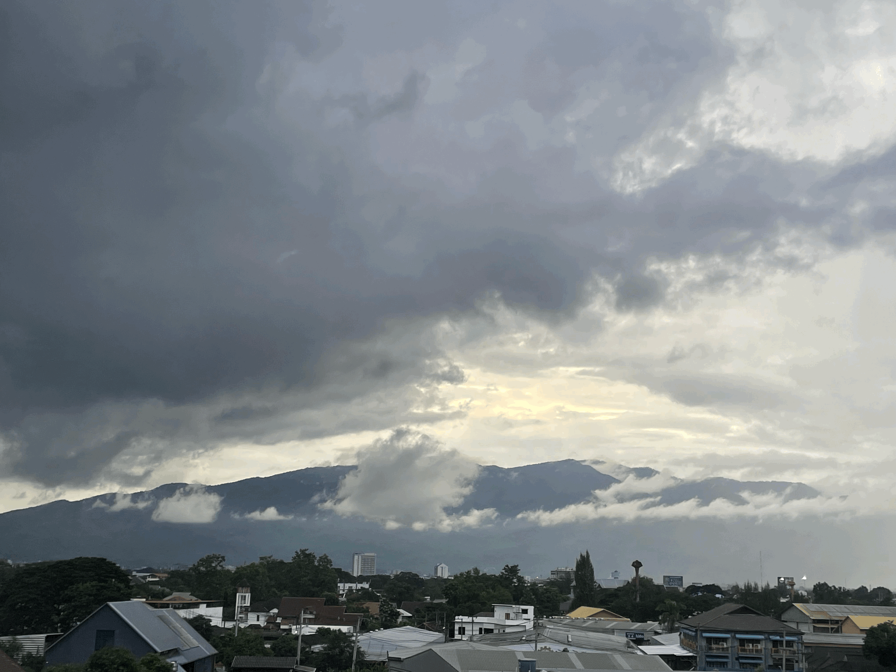

Cost of living in Hội An
Rent, food, transport and activities — a real family budget for worldschoolers, in VND and GBP
read on →
Rent, food, transport and activities — a real family budget for worldschoolers, in VND and GBP
read on →
Six bedrooms, a pool, a view over the river — and a second rental in Hội An that came with company we didn't invite
read on →
A deep breath before plunging into a new year — kumquats, red envelopes and hammer-and-sickle bunting
read on →
"Yeah… I mean, they don't bother me…" — the eldest, on Tet and the accompanying fireworks
read on →
Water buffalo in shallow paddy water, content and untroubled
read on →
Hội An local life, through the steady rhythms of the Fruit Man and a well-celebrated festival
read on →Google Translate as an accidental poet — and the strange beauty of mistranslations
read on →
Experiencing tropical storms in Hội An — the sound, the smell, the slow drift of a city under sheets of water
read on →
Tourism, Western influx, and what happens when the things that make a place itself are diluted by their own success
read on →
Life in Vietnam at Christmas — fairy lights in the palm trees, a tree on a scooter, a different sort of winter
read on →
A quiet moment of reflection on a night out - or something less reliable?
read on →How we educate our boys through travel — the days, the books, and the questions that don't have textbook answers
read on →
Cultural observations from the other side of a familiar plate — held with curiosity, not judgement. And some judgement
read on →
Arrival in Vietnam, the long way round — bureaucracy, weather, and the patience of a family with four passports
read on →
A waiting-room essay — visa stress, sticky heat, and the strange luxury of having nowhere immediate to be
read on →
Chiang Mai to Bangkok by sleeper — a meditation on the rails, a surprisingly violent monk, and the slowest sort of arrival
read on →
How our usual lives shrank and shrank until everything we owned could fit into a single room — and why we hit 'buy now' anyway
read on →
Looking due west from a fifth-floor window in Chiang Mai — on the strange, almost physical jolt of encountering mountains for the first time
read on →
On the school question, the square-peg-round-hole problem, and why teaching your children to count cards is sound educational practice
read on →
A world-school meet-up, a proud Israeli, a casually racist Australian, and why Thai street food is the only acceptable response to all of the above
read on →A short letter every other Saturday with the latest entry, a photograph, and a daft thing one of the boys said this week.